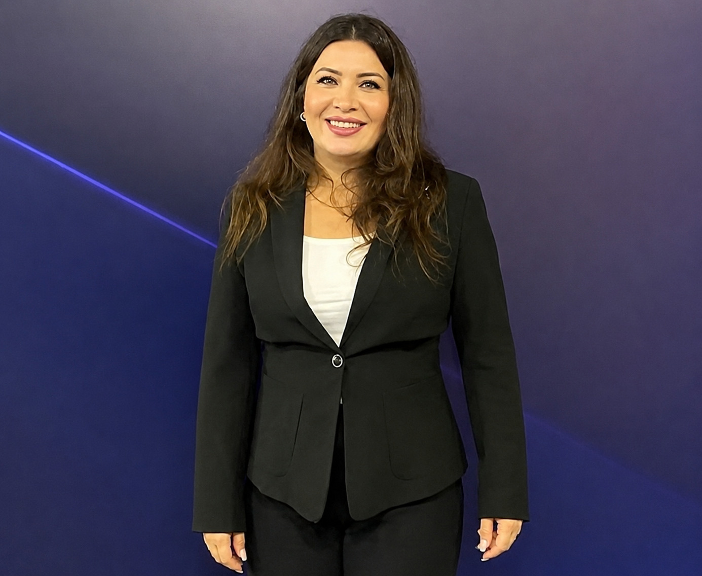

Matematik eğitimi, öğretim programları, ders kitabı ve dijital içerik inceleme, ölçme-değerlendirme ve eğitim içeriklerinin geliştirilmesi alanlarında çalışan bir eğitimci.
Çalışmalarımı incele ↓
Öğretmenlik deneyimini akademik çalışmalar, program geliştirme, ders kitabı inceleme ve eğitim teknolojileriyle destekleyen profesyonel profil.
Eğitim Fakültesi — İlköğretim Matematik Öğretmenliği, Lisans
Eğitim Bilimleri Enstitüsü — Matematik Eğitimi/Öğretmenliği, Tezli Yüksek Lisans
Ölçme ve Değerlendirme
Öğretmen — görevlendirme, T.C. Millî Eğitim Bakanlığı merkez teşkilatı
Öğretmen — görevlendirme, T.C. Millî Eğitim Bakanlığı merkez teşkilatı
Matematik Öğretmeni — Ankara / Mamak
Matematik Öğretmeni — Ankara / Kahramankazan
Öğretim programı, ders kitabı, farklılaştırma ve dijital içerik alanındaki çalışmalar.
Matematik Dersi Öğretim Programı (2018) doğrultusunda hazırlanan 5, 6, 7 ve 8. sınıf ders kitapları, çalışma kitapları ve dijital içeriklerin incelenmesi.
Türkiye Yüzyılı Maarif Modeli Matematik Dersi Öğretim Programı (2024) kapsamındaki çalışmalar.
5, 6 ve 7. sınıf matematik ders kitapları ile 5, 6 ve 7. sınıf farklılaştırma etkinlikleri öğretmen kılavuz kitaplarının incelenmesi.
Millî Eğitim Bakanlığı Bireysel Öğrenme Platformu'nda (MEBİ) inceleyici olarak görev.
Bölge Bilim Kurulunca onaylanarak Ankara Bölge Sergisine kalan projeler kapsamında çalışma.
Hür, T. G. & SEÇER, S. (2024). İlkokul 4. Sınıf Öğrencilerinin Matematiğe Yönelik Tutumlarının İncelenmesi. Presented at the 1. Uluslararası Dostluk Köprüsü Sosyal Bilimler Kongresi, Comrat.
Kaymakamlık
Kaymakamlık ve Bakanlık tarafından verilen başarı belgeleri.